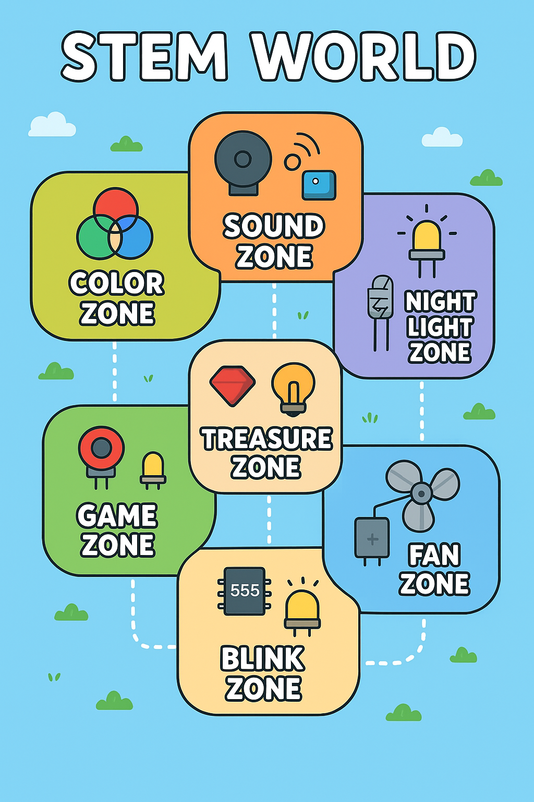

Your Gateway to Understanding Electronic Components and Circuits
Welcome to the fascinating world of electronics! This Electronics Learning Lab kit is your perfect starting point for understanding how electronic components work, how to read circuit diagrams, and how to build your own electronic projects.
Whether you're a complete beginner or someone looking to refresh their knowledge, this kit provides hands-on experience with real components that you'll encounter in countless electronic devices.
Your Electronics Learning Lab contains everything you need to start exploring electronics:
| Component | Description | Quantity |
|---|---|---|
| Breadboard (830 tie points) | Prototyping platform for building circuits without soldering | 1 |
| Arduino UNO Compatible Board | Microcontroller for programmable experiments | 1 |
| Resistor Assortment | Various values: 220Ω, 330Ω, 1kΩ, 10kΩ, 100kΩ | 25 |
| LEDs (Red, Green, Blue, Yellow) | Light emitting diodes for visual feedback | 20 |
| Capacitors | Electrolytic and ceramic capacitors (10μF, 100μF, 0.1μF) | 15 |
| Transistors (2N2222, 2N3904) | NPN bipolar junction transistors | 10 |
| Diodes (1N4007) | Rectifier diodes for current control | 10 |
| Potentiometers (10kΩ) | Variable resistors for analog input | 3 |
| Push Buttons | Momentary switches for digital input | 5 |
| Buzzer | Piezo buzzer for audio output | 1 |
| Temperature Sensor (LM35) | Analog temperature sensor | 1 |
| Light Dependent Resistor (LDR) | Photoresistor for light sensing | 2 |
| Ultrasonic Sensor (HC-SR04) | Distance measurement sensor | 1 |
| Logic Gates IC (74HC08, 74HC32) | AND and OR gate integrated circuits | 4 |
| Jumper Wires | Male-to-male, male-to-female, female-to-female | 65 |
| Multimeter | Digital multimeter for measurements | 1 |
| Power Supply Module | 3.3V/5V breadboard power supply | 1 |
| USB Cable | For Arduino programming and power | 1 |
Let's explore the key components in your kit and understand their functions:
Control current flow in circuits. Color bands indicate resistance value.
Light Emitting Diodes convert electrical energy to light. Note polarity!
Store electrical energy temporarily. Used for filtering and timing.
Electronic switches and amplifiers. Three legs: Base, Collector, Emitter.
Allow current to flow in one direction only. Used for protection.
Convert physical quantities (light, temperature) to electrical signals.
Build your first circuit to light up an LED and understand Ohm's law.
+5V ----[330Ω]----[LED]---- GND
| |
Anode Cathode
(Long) (Short)
Step 1: Insert the power supply module into your breadboard.
Step 2: Place the 330Ω resistor on the breadboard, connecting one end to the positive rail.
Step 3: Insert the LED with the longer leg (anode) connected to the resistor and shorter leg (cathode) to ground.
Step 4: Power on your circuit and observe the LED light up!
The resistor limits the current flowing through the LED. Without it, the LED would draw too much current and burn out. This demonstrates Ohm's Law: V = I × R
Calculate: With 5V supply and 330Ω resistor, current ≈ 15mA (safe for most LEDs)
Understand how digital logic works using AND and OR gates.
Step 1: Insert the 74HC08 IC into the breadboard (note the notch orientation).
Step 2: Connect power (pin 14) and ground (pin 7) to the IC.
Step 3: Wire two push buttons as inputs with pull-down resistors.
Step 4: Connect the AND gate output to an LED through a current-limiting resistor.
| Input A | Input B | Output |
|---|---|---|
| 0 | 0 | 0 |
| 0 | 1 | 0 |
| 1 | 0 | 0 |
| 1 | 1 | 1 |
The LED only lights when BOTH buttons are pressed!
Read analog sensor data and understand ADC conversion.
The LM35 outputs 10mV per degree Celsius. The Arduino's ADC converts this analog voltage to a digital value (0-1023), which we then convert back to temperature.
Don't panic! Electronics troubleshooting is a valuable skill. Use your multimeter to check voltages, continuity, and component values. Most problems are simple connection issues.
Ready for more challenges? Try these advanced projects:
Use Arduino to control a sequence of LEDs mimicking a traffic light system with timing controls.
Combine temperature sensor with buzzer and LEDs to create an alert system for temperature thresholds.
Use LDRs and logic gates to create decision-making circuits for light-seeking behavior.
Create a random number generator using button input and LED display output.
Electronics is a vast field. This kit gives you the foundation to explore microcontrollers, digital signal processing, power electronics, and much more. Keep experimenting!
Set multimeter to DC voltage mode (V⎓). Connect probes in parallel with the component or circuit.
Set to current mode (A). Break the circuit and connect multimeter in series. Start with highest range.
Set to resistance mode (Ω). Ensure circuit is powered off. Connect probes across the component.
Use continuity mode (♪). Multimeter beeps if there's a continuous path between probe points.
Learn to read resistor values using the color band system:
Always check IC datasheets for exact pinouts. Pin 1 is usually marked with a dot or notch indicator.